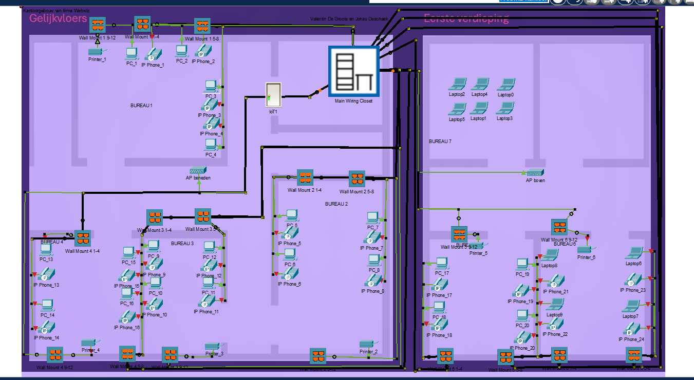

Project 1
Het Internet of Things (IoT) verandert de manier waarop we met technologie omgaan. Of het nu gaat om slimme apparaten in huis, geavanceerde sensoren in de industrie of verbonden voertuigen, IoT-apparaten maken onze wereld slimmer en efficiënter. Hier vind je diepgaande informatie en data over hoe deze apparaten werken en samenwerken. Een goed geïntegreerd IoT-netwerk biedt niet alleen gemak, maar ook nieuwe mogelijkheden voor automatisering en data-analyse. Ontdek hoe IoT de basis legt voor een verbonden toekomst, waarin apparaten naadloos met elkaar communiceren en onze digitale wereld verder uitbreiden.
